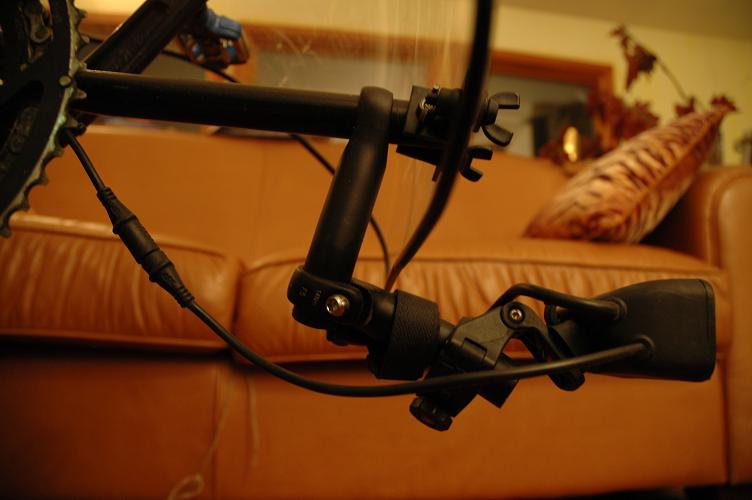
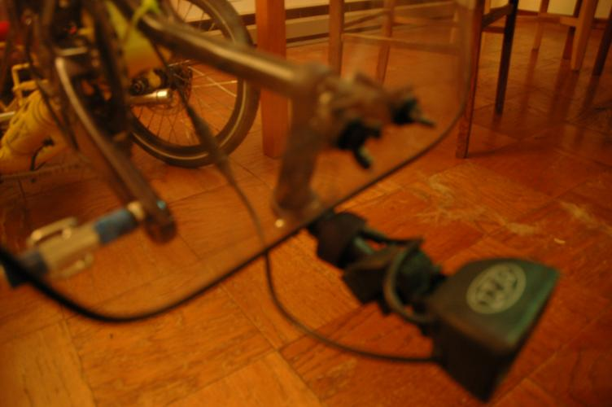

Mueller
Windwrap XT fairing.
(This had not arrived when I picked up the trike, so Hugh shipped
it to me and Installed it (easily) myself. The only tricky part
was finding a new place to mount the headlight. (Having it behind
the fairing produces too much glare on the fairing.) I added a
little yellow paint on the black frame of the fairing, just for fun.

